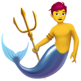

About SavvySpices ... .png)
Learn more about our website and the developer behind it.
About This Web App 
🢣 SavvySpices is designed to help food lovers explore recipes and culinary tips quickly and easily, without the hassle of creating an account.
🢣 Core features of SavvySpices include: use our Cook with AI feature powered by a personal SavvySpices AI  and SavvySpices Special feature, which is API-based for an enhanced cooking experience.
and SavvySpices Special feature, which is API-based for an enhanced cooking experience.
🢣 Experience our AI-powered features like Cook with AI and the SavvySpices Special to make cooking smarter and more fun! .png)
About the Developer
🢣 This website is developed by Sanket Padhyal . Passionate about web development and cooking.
🢣 I love building new projects. I built this project to fulfill my dream of creating something amazing on the web. 
🢣 This project took a long time to complete due to health issues and some personal matters. Thank you for your patience and understanding! 
🢣 You can visit my GitHub for more projects: @sanketpadhyal